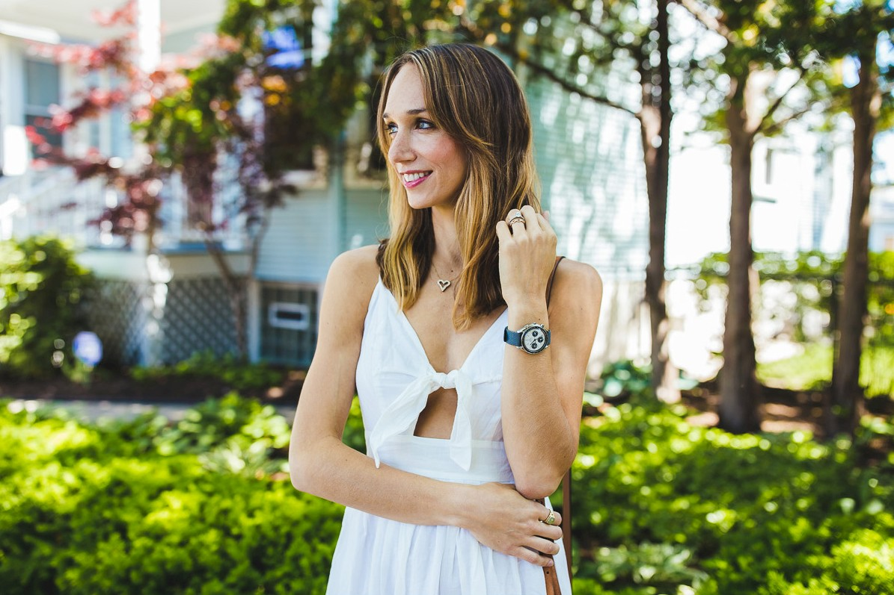

ONE TO WATCH
Blair Staky:
Founder of The Fox & She
21 JUNE 2017
Blair Staky is the founder "The Fox & She" - an inspiring celebration of style, health, colour and life. Here, she talks to OMEGA about her career journey and the only watch she ever wears!
What inspired you to create The Fox and She?When I first graduated I was working in a job that wasn’t utilizing my creativity as much as I would have hoped for and didn’t keep me very busy. I desperately needed something else to do that fed my creative side, so I started blogging (back then, it wasn’t called The Fox & She). After moving to Chicago, the direction of the blog and the content really evolved and the I re-branded under a new name. The content continues to change and evolve as I do, but I love that it’s a reflection of who I am and what I’m passionate about.
What have been the biggest challenges in growing your idea into a successful business?As blogging continues to grow, the market has become more and more saturated over the years, which of course makes it harder to get noticed and to grow. Staying true to myself is always a challenge. It’s tempting to jump on the bandwagon and simply talk about the latest trends, but I’ve always wanted my site to have more depth and meaning than simply sharing my personal style. Reminding myself of the big picture goals on a regular basis is a must to keep my site growing into something that’s unique and memorable. I’m happiest with my content when I’m writing about topics I’m passionate about, but it’s easy to get swayed!
You give a lot of great advice on style, life and health. But what’s the best advice you’ve ever received yourself?Thank you! I’ve learned a lot from trial and error and I’m always happy to share. The best advice I’ve ever received was from my dad, and it was “just go for it”. I’ve always had an entrepreneurial spirit and have created (and failed at) several businesses over the years. Despite plenty of failed ideas, I’m always so thankful for everything I learn in the process, whether it’s about myself or running a successful business. I’ve also been lucky to have my parents’ constant support through every venture I’ve attempted!
We often see you wearing an OMEGA Speedmaster in your pictures. Where did the watch come from?Yes, it’s pretty much the only watch I wear and it’s on my wrist almost everyday. My OMEGA Speedmaster was a Christmas gift from my husband, who collects vintage watches and has multiple Speedmasters from the early-to-mid 1960’s. Collecting vintage watches is one of his true passions, and he wanted me to share in that passion with my own unique piece. This particular variation was produced for the Japanese market in the 1990’s (I think!) in a limited quantity and wears absolutely perfectly on my wrist regardless of my outfit. My only request was that it had a “panda dial” because I loved the classical styling and contrasting, neutral colors.

What do you love about it?I love the way that it evokes the designs of some very classic chronographs, but manages to look modern and “at home” in the present world. One of my past (thankfully, successful) businesses was a website design and development company, and having the designer background draws me to watches with unique details and contrasting elements. It’s sporty, goes with everything, and I also love that it’s not too dainty and feminine. My husband, Rob, even wears it occasionally!
We know you love colour. OMEGA brings a lot of colour through different straps, dials and case materials. Is there a particular colour of watch you’d love to own?I do love color, but when it comes to my watch, I actually love sticking to something classic and understated. I do switch up my straps on occasion, but they’re always neutral. If I got to pick any other watch, I think I’d love a watch with a dark blue face and contrasting white details—I love the look and wouldn’t mind adding one to my own “collection.”
Any other essential style tips that you think every woman should know?Dress in what makes you feel confident! That’s my best style tip ever. It’s different for everyone, but every woman knows what outfits or pieces make her feel amazing. Wear them as often as you can!
Do you have any fashion regrets?Of course! Who doesn’t?! Most of them are from college when my style was really evolving and becoming it’s own. My own sense of personal style didn’t exist and would swing from preppy outfits to tie-dye hippie shirts. I’d like to think I’ve landed somewhere in the middle of that now.
We imagine that your work takes up a lot of your time. But what would be your perfect 24 hours?Work does take up a lot of my time, but thankfully, I enjoy most of it. My perfect 24 hours would include no work though, haha! As much as I love what I do, it’s rare that I take breaks and even when we’re on vacation, I’m usually creating content or answering a few emails in between. So, those 24 hours would be tech free, except for my camera, and would include a facial, massage, lunch with Rob, and an afternoon at the pool with a glass of crisp rosé!
YOU MIGHT ALSO ENJOY...
The Speedmaster 38 mm
A colourful new twist on a design classic.
Cindy's "Her Time" Highlights
Cindy Crawford shares her thoughts on OMEGA's "Her Time" exhibition and how the definition of feminine style has evolved over time.
From OMEGA with love
Prepare to swoon, as our Valentine's Day timepiece and ring pairing is sure to turn your head and make your heart beat faster.